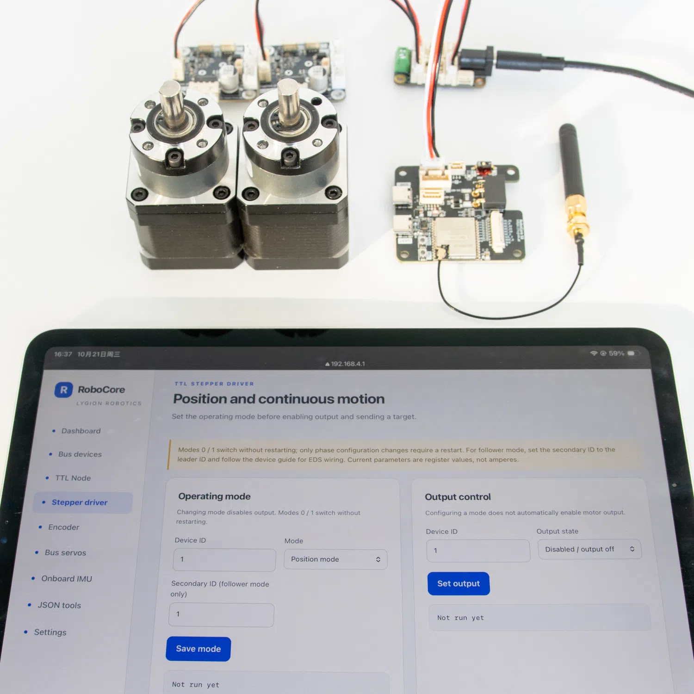
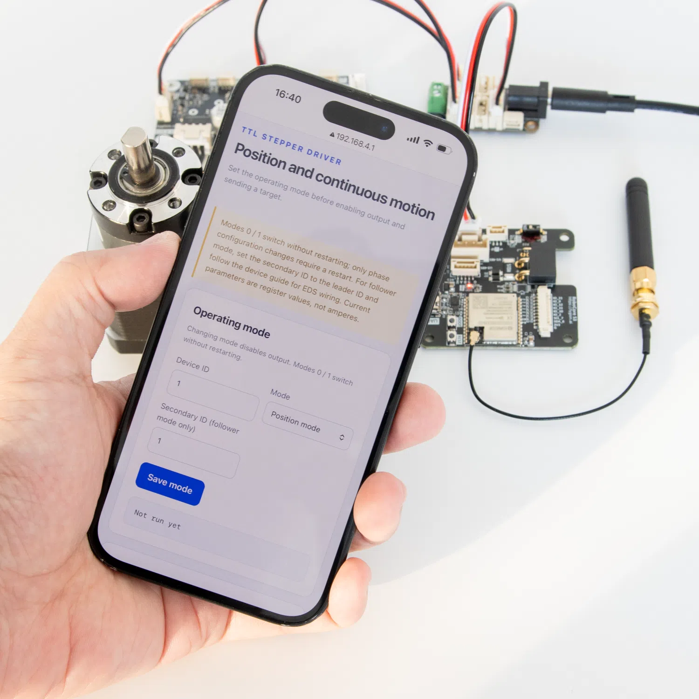

Control from your browser
Find devices, read feedback and adjust settings—no code required.
ESP32-S3 · Robot controller
TTL, RS485, CAN, Wi-Fi and a six-axis IMU on one compact board. Control bus devices from your phone's browser, connect a host computer, or build your own robot firmware.
Open-source firmware · Step-by-step Wiki · Working examples

Overview
From mobile robots to arms and pan-tilt systems, choose the workflow that fits your project.
Find devices, read feedback and adjust settings—no code required.

Connect a PC, Raspberry Pi or Jetson and control your robot with a few lines of code.

Move low-level kinematics and interpolation onto RoboCore S3, freeing your host computer to focus on planning and decisions. Build a control stack around your robot's needs.
Split high-level processing and device control between a host and RoboCore S3, or run simpler tasks on the board alone.
Interfaces and capabilities

Work with a range of bus devices. Examples cover FEETECH SCS, STS, SMS and HLS servos, plus LYGION stepper drivers, TTL Node, E02 encoders, TTL IMU and PowerHub devices. Add support for other devices by implementing their protocols.
The QMI8658A provides live three-axis acceleration and angular velocity readings, with browser-based orientation viewing and JSON access.
Add your own peripherals, or use the UI module in Kit 2 for a display, button input and audible alerts.
Use the UART port for programming and debugging with automatic bootloader entry, and native USB for USB CDC communication.
Quick start
The built-in Web app works on phones, tablets and computers. No client software to install.
Connect your devices and switch on the power. RoboCore S3 creates its own Wi-Fi hotspot.
Default network: Robot. Password: 12345678.
Go to 192.168.4.1 in your browser, select English, then scan device IDs and read their feedback.


Wireless connectivity
Designed for robots with metal enclosures. The included antenna mounts through a Ø6.2 mm panel hole; other 2.4 GHz antennas with an IPEX1 connector can also be used.

Development and integration
Send readable JSON commands to RoboCore S3 from your own application. The open-source examples give you a practical starting point for controlling bus devices.
Connect a PC or single-board computer through the ESP32-S3's native USB interface.
A straightforward option for scripts, configuration and basic wireless control.
Keep a wireless connection open for frequent command updates.
Exchange data with nearby ESP32 devices without a router.
Scan for bus devices with IDs from 0 to 20.
{"T":700,"first":0,"last":20}Standalone .ino sketches that focus on one feature at a time.
Customize the full firmware, Web interface and device protocols.
AGENTS.md and the open Wiki give AI tools useful project context.
Motion sensing
A three-axis accelerometer and three-axis gyroscope provide data for tracking your robot's orientation. Read the latest IMU measurements from your host using JSON commands.
Six-axis heading is relative and drifts over time.

Peripheral expansion
Access the ESP32-S3's remaining GPIO pins, I²C, 3.3V and ground to connect additional peripherals.
Kit 2 includes User Interface Module (A), combining an OLED display, a five-way button and a buzzer for simple local interaction.

Source code and tutorials
From individual board features to host-side JSON communication, the full firmware, Web console, Arduino sketches and Python scripts give you code to learn from and build on.
Start with the complete PlatformIO project, then follow the Wiki for wiring, dependencies and setup.
Run on RoboCore S3
Each folder contains a focused .ino sketch, making it easier to understand and test one feature at a time.
Discovery, control and feedback
Wired and wireless connections
Sensors, displays and controls
Uploading a standalone Arduino example replaces the full firmware. Our flashing tools and guide help you restore the factory firmware when you need it.
Let your host handle the bigger picture
Control RoboCore S3 from a PC, Raspberry Pi, Jetson or another single-board computer.
robocore/client.pyUse the same readable JSON commands across multiple connection types to communicate with RoboCore S3.
http_example.pySend JSON requests and inspect the HTTP status and response.
webSocket_example.pyMaintain a connection, receive messages through callbacks and handle connection state.
usb_cdc_example.pySend newline-delimited JSON commands over native USB.
AI-assisted development
Both the product source code ↗ and the Wiki source ↗ are open. The included AGENTS.md gives AI tools project-specific guidance to help you develop and customize with confidence.
System power
Power RoboCore S3 through XT30, the 5264-3P TTL device connector or the XH2.54-4P RS485 device connector.
Connect your supply to a hub, then run a single 5264-3P cable to RoboCore S3 for both power and TTL communication. The hub distributes power to the bus devices, keeping their high current off the controller board.
Stay within the 5–48V input range and the voltage ratings of the hub and every device sharing the supply.
See power and wiring guidance ↗
Practical details

The UART USB-C port enters programming mode automatically. Update firmware over a USB data cable without opening the robot or pressing BOOT and RESET.

The TTL and device RS485 ports share a UART, so you can mix devices using the same protocol, such as STS and SMS servos. Use a LYGION RS485-TTL Power Bridge for longer cable runs.

Route IO13/IO14 to either CAN on the CAN 2+2 connector or external RS485 on GH1.25-5P. This RS485 channel is separate from the device bus.

GH1.25-3P carries TTL data and common ground, but no actuator power. Connect it to a LYGION hub to keep device groups on separate supplies in higher-power systems.
Hardware
Match the numbers to the table below. The board is shown face up, with both USB-C ports at the bottom.

| No. | Component / connector | Function and usage |
|---|---|---|
| 01 | ESP32-S3 module | ESP32-S3-WROOM-1U-MCR8N8 with 8 MB Flash and 8 MB PSRAM for control code and wireless communication. |
| 02 | IPEX1 antenna connector | Connect a 2.4 GHz external antenna before using Wi-Fi or ESP-NOW. |
| 03 | PH1.25-10P expansion | GPIO, I²C, 3.3V and GND for peripherals, including User Interface Module (A). |
| 04 | CAN 2+2 / XT30 power | XT30 accepts 5–48V. The signal contacts carry CAN; set the selector to CAN mode. |
| 05 | CAN / RS485 selector | Routes IO13 RX / IO14 TX to either CAN or external RS485. Use the matching protocol in your firmware. |
| 06 | GH1.25-5P external RS485 | A separate RS485 channel on IO13 / IO14; set the selector to 485. Includes auxiliary 5V for peripherals drawing no more than 200mA. |
| 07 | 5264-3P single-wire TTL | Single-wire TTL devices on IO4 TX / IO5 RX. Power follows the board's input voltage, with up to 6A continuous output. Also accepts power input. |
| 08 | XH2.54-4P device RS485 | RS485 devices share UART1 (IO4 / IO5) and baud rate with TTL. Power follows the board's input voltage, with up to 6A continuous output. Also accepts power input. |
| 09 | GH1.25-3P board-to-board TTL | TTL data and common ground for separately powered boards or device groups. Does not carry actuator power. |
| 10 | Type-C USB | ESP32-S3 native USB on IO19 / IO20 for USB CDC communication with a host. |
| 11 | Type-C UART | USB-to-serial connection to UART0 for programming and debugging, with automatic bootloader entry. |
| 12 | BOOT button | Connected to IO0. Use with RESET to enter the bootloader manually. |
| 13 | RESET button | Holds the controller in reset while pressed; release to restart. Does not disconnect actuator power. |
Device buses: Ports 07 and 08 share UART1. Their power contacts do not step down voltage and can also accept power input. When powered through XT30, both outputs and the board share its 10A input limit.
Onboard sensing: The QMI8658A measures three-axis acceleration and angular velocity on IO6 / IO7, sharing I²C with the external OLED. The OLED, five-way button and buzzer are on the external UI module.
Technical details
Dimensions and mounting

Consumption figures are for the board alone, excluding bus devices and peripherals. Use all four mounting holes and allow clearance for plugs, cables and the antenna connector.
Choose your kit
Kit 1
Use the browser, connect a host or run standalone robot control code.

Kit 2
A display, button input and audible feedback for your robot.

Everything in Kit 1, plus:
User Interface Module (A) includes a five-way button, a 0.91-inch OLED and a buzzer.
Common questions
Yes. Use the built-in Web console to scan bus devices, adjust parameters and read feedback. Autonomous robot behavior requires additional programming.
RoboCore S3 communicates with bus devices. A stepper motor needs a suitable stepper driver, and other motors need their own compatible drivers. The powered bus connectors are not motor phase outputs.
Yes. Send JSON commands over USB CDC or a network connection. The examples make it easy to control bus devices through RoboCore S3 without installing a separate device SDK on your Raspberry Pi.